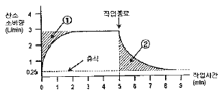
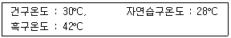
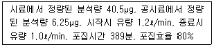
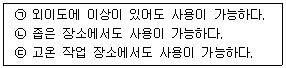
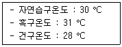
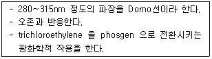
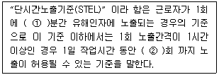
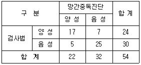
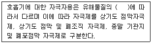
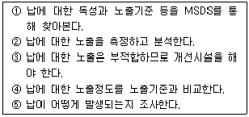

산업위생관리기사 (2009-05-10 기출문제)
1과목: 산업위생학개론
1. 작업의 강도가 클수록 작업시간이 짧아지고 휴식시간이 길어지며 실동율은 감소하는데 작업대사율(RMR)이 6일때의 실동율(%)은 얼마인가? (단, 사이또와 오시마의 공식을 이용한다.)
- 70
- 65
- 60
- 55
(정답률: 62%)

2. 다음 그림은 작업의 시작 및 종료시의 산소소비량을 나타낸 것이다. 번호 ①과 ②의 의미를 올바르게 나열한 것은?

- ①작업부채, ②작업부채 보상
- ①작업부채 보상, ②작업부채
- ①산소부채, ②산소부채 보상
- ①산소부채보상, ②산소부채
(정답률: 75%)
3. 미국정부산업위생전문가협의회(ACGIH)에 의한 작업강도 구분에서 “심한작업(heavy work)”에 속하는 것은?
- 150 ~ 200kcal/h 까지의 작업
- 200 ~ 350kcal/h 까지의 작업
- 350 ~ 500kcal/h 까지의 작업
- 500 ~ 750kcal/h 까지의 작업
(정답률: 75%)
4. 다음 중 사무실 공기관리 지침에 관한 설명으로 틀린 것은?
- 사무실 공기의 관리기준은 8시간 시간가중평균농도를 기준으로 한다.
- PM10이란 입경이 10μm 이하인 먼지를 의미 한다.
- 총부유세균의 단위는 CFU/m3 로 1m3 중에 존재하고 있는 집락형성 세균 개체수를 의미한다.
- 사무실 공기질의 모든 항목에 대한 측정결과는 측정치 전체에 대한 평균값을 이용하여 평가한다.
(정답률: 85%)
5. 산업재해로 인한 직접손실비용이 300만원 발생하였다면, 총재해 손실비는 얼마로 추정되는가? (단, 하인리히의 재해손실비 산출기준을 따른다.)
- 600만원
- 900만원
- 1200만원
- 1500만원
(정답률: 82%)
6. 사무실 공기관리 지침에서 지정하는 오염물질에 대한 시료채취 방법이 잘못 연결된 것은?
- 이산화탄소 - 비분산적외선 검출기에 의한 채취
- 일산화탄소 - 전기화학 검출기에 의한 채취
- 오존 - 멤브레인 필터를 이용한 채취
- 총부유세균 - 여과법을 이용한 부유세균채취기로 채취
(정답률: 81%)
7. 다음 중 'OSHA' 가 의미하는 기관의 명칭으로 옳은 것은?
- 영국보건안전부
- 미국산업위생협회
- 미국산업안정보건청
- 세계보건기구
(정답률: 74%)
8. 다음 중 근육노동을 할 때 특히 공급하여야 할 비타민의 종류로 가장 적절한 것은?
- 비타민A
- 비타민B1
- 비타민D
- 비타민E
(정답률: 94%)
9. 다음 중 전신피로 정도를 평가하기 위한 측정수치로 적절하지 않은 것은? (단, 측정 수치는 작업을 마친 직후 회복기의 심박수이다.)
- 작업종료 후 30 ~ 60초 사이의 평균 맥박수
- 작업종료 후 60 ~ 90초 사이의 평균 맥박수
- 작업종료 후 120 ~ 150초 사이의 평균 맥박수
- 작업종료 후 150 ~ 180초 사이의 평균 맥박수
(정답률: 69%)
10. 다음 중 근육운동에 동원되는 주요 에너지원 중에서 가장 먼저 소비되는 에너지원은?
- CP
- ATP
- 포도당
- 글리코겐
(정답률: 79%)
11. 다음 중 산업안전보건법령상 물질안전보건자료(MSDS) 작성시 포함되어야 할 항목이 아닌 것은? (단, 기타 참고사항은 제외한다.)
- 유해·위험성
- 유효사용기간
- 안정성 및 반응성
- 노출방지 및 개인보호구
(정답률: 76%)
12. 무게 9kg의 물건을 근로자가 들어올리려고 한다. 해당 작업조건의 권고기준(RWL) 3.3kg이 3.3kg이고, 바닥으로부터 이동거리는 1.5m(1분 5회씩 1일 8시간)일 때에 중량물 취급지수(LI, Lifting Index)는 약 얼마인가?
- 2.7
- 3.5
- 4.6
- 5.8
(정답률: 77%)
13. 산업안전보건법상 작업환경측정에 관한 내용으로 틀린 것은?
- 작업환경측정을 실시하기 전에 예비조사를 실시하여야 한다.
- 모든 측정은 개인시료채취방법으로만 실시하여야 한다.
- 작업이 정상적으로 이루어져 작업시간과 유해인자에 대한 근로자의 노출정도를 정확히 평가할 수 있을 때 실시하여야 한다.
- 작업환경측정자는 그 사업장에 소속된 자로서 산업위생관리산업기사 이상의 자격을 가진 자를 말한다.
(정답률: 98%)
14. 다음 중 산업위생통계에 있어 대표값에 해당하지 않은 것은?
- 중앙값
- 산술평균값
- 최빈값
- 표준편차값
(정답률: 59%)
15. 미국산업위생학술원(AAIH)에서 채택한 산업위생분야에 종사하는 사람들이 지켜야 할 윤리강령에 포함되지 않는 것은?
- 전문가로서의 책임
- 일반대중에 대한 책임
- 기업주와 고객에 대한 책임
- 국가에 대한 책임
(정답률: 87%)
16. 연평균 근로자수가 5000명인 A사업장에서 1년동안에 125건의 재해로 인하여 250명의 사상자가 발생하였다면 이 사업장의 연천인율은 얼마인가?
- 25
- 50
- 100
- 200
(정답률: 82%)
17. 산업안전보건법상 석명의 작업환경측정결과 노출기준을 초과하였을 때 향후 측정주기는 어떻게 되는가?
- 3개월에 1회 이상
- 6개월에 1회 이상
- 1년에 1회 이상
- 2년에 1회이상
(정답률: 73%)
18. 근로자 건강진단과 관련하여 건강관리구분 판정인 “D1”이 의미하는 것은?
- 직업병유소견자
- 일반질병유소견자
- 직업병요관찰자
- 일반질병요관찰자
(정답률: 35%)
19. 다음 중 작업자의 최대작업역을 올바르게 설명한 것은?
- 윗팔과 아래팔을 뻗어 도달하는 최대 범위
- 윗팔과 아래팔을 상, 하로 이동할 때 닿는 최대범위
- 상체를 좌, 우로 이동하여 최대한 닿을 수 있는 범위
- 위팔을 상체에 붙인 채 아래팔과 손을 조작할 수 있는 범위
(정답률: 68%)
20. 다음중 영상표시단말기(VDT)의 취급자세로 적절하지 않은 것은?
- 무릎의 내각은 75° 이내가 되도록 한다.
- 눈으로부터 화면까지의 시거리는 40cm이상을 유지한다
- 작업자의 시선은 수평선으로부터 아래로 10~15° 이내로 한다.
- 작업자의 어깨가 들리지 않아야 하며, 팔꿈치의 내각은 90° 이상이 되도록 한다.
(정답률: 83%)
2과목: 작업위생측정 및 평가
21. 습구온도를 측정하기 위한 측정기기와 측정시간의 기준을 알맞게 나타낸 것은? (단, 노동부 고시 기준)
- 자연습구온도계 - 15분 이상
- 자연습구온도계 - 25분 이상
- 아스만통풍건습계 - 15분이상
- 아스만통풍건습계 - 25분이상
(정답률: 70%)
22. 어떤 작업장 내 공기오염도를 측정하였더니 카본 테트라클로로 에탄 25ppm(노출기준 50ppm), 디클로로에탄10ppm(노출기준 25ppm), 클로로포름 15ppm(노출기준 25ppm)으로 판정되었다. 이때 혼합오염의 노출기준은? (단, 상가작용 기준)
- 약 18ppm
- 약 24ppm
- 약 33ppm
- 약 42ppm
(정답률: 74%)
23. 입자상 물질 채취를 위하여 사용되는 직경분립충돌기의 장점 또는 단점으로 틀린 것은?
- 호흡기의 부분별로 침착된 입자크기의 자료를 추정할 수 있다.
- 되튐으로 인한 시료의 손실이 일어날 수 있다.
- 입자의 질량크기 분포를 얻을 수 있다.
- 시료채취가 용이하고 비용이 저렴하다.
(정답률: 85%)
24. 공기 중 석면을 막여과지에 채취한 후 전처리하여 분석하는 방법으로 다른 방법에 비하여 간편하나 석면의 감별에 어려움이 있는 측정방법은?
- X선 회절법
- 편광현미경법
- 위상차현미경법
- 전자현미경법
(정답률: 73%)
25. 활성탄관을 연결한 저유량 공기 시료채취펌프를 이용하여 벤젠증기(MW = 78g/mol)을 0.038m2 채취하였다. GC를 이용하여 분석한 결과 478μg의 벤젠이 검출되었다면 벤젠증기의 농도(ppm)는? (단, 온도 25℃, 1기압 기준, 기타 조건 고려 안함)
- 1.87
- 2.34
- 3.94
- 4.78
(정답률: 55%)
26. '정량한계'에 대한 설명으로 맞는 것은?
- 표준편차의 3배 또는 검출한계의 5 또는 5.5배로 정의
- 표준편차의 5배 또는 검출한계의 5 또는 5.5배로 정의
- 표준편차의 5배 또는 검출한계의 3 또는 3.3배로 정의
- 표준편차의 10배 또는 검출한계의 3 또는 3.3배로 정의
(정답률: 86%)
27. Hexane의부분압이124mmHg (OEL 500ppm)이었을 때 VHRHexane은?
- 312.5
- 326.3
- 347.2
- 383.8
(정답률: 88%)
28. 세척제로 사용하는 트리클로로 에틸렌의 근로자 노출농도를 측정하고자 한다. 과거의 노출농도를 측정하고자 한다. 과거의 노출농도를 조사해본 결과, 평균 60ppm이었다. 활성탄관을 이용하여 0.17ℓ/분으로 채취하였다. 트리클로로에틸렌의 분자량은 131.39 이고 가스크로마토그래피의 정량한계는 시료당 0.75mg이다. 채취하여야 할 최소한의 시간(분)은? (단, 25°C, 1기압 기준)
- 6.9분
- 9.2분
- 10.4분
- 13.7분
(정답률: 53%)
29. 가스상 물질의 측정을 위한 수동식 시료 채취기(Passive sampler)에 관한 설명으로 틀린 것은?
- 채취 원리는 Fick's 확산 제 1법칙으로 나타낼 수 있다.
- 장점은 간편성과 편리성이다.
- 유량이라는 표현 대신에 채취 용량(SQ)으로 표시한다.
- 오염물질의 성질(확산, 투과 등)을 이용하여 동력 없이 수동적으로 농도 구배에 따라 채취한다.
(정답률: 52%)
30. 가스상 물질의 분석 및 평가를 위한 '열탈착' 에 관한 설명으로 틀린 것은?
- 용매 탈착시 이황화탄소는 독성및 인화성이 크고 작업이 번잡하며 열탈착이 보다 간편한 방법이다.
- 활성탄관을 이용하여 시료를 채취한 경우, 열탁착에 필요한 300°C 이상에서는 많은 분석물질이 분해되어 사용이 제한된다.
- 열탈착은 용매 탈착에 비하여 흡착제에 채취된 일부 분석물질만 기기로 주입되어 감도가 떨어진다.
- 열탈착은 대개 자동으로 수행되며 탈착된 분석물질이 가스크로마트그래피로 직접 주입되도록 되어 있다.
(정답률: 49%)
31. 2차 표준기구 중 일반적 사용범위가 0.5 ~ 230 L/min이고 정확도는 ±0.5%이며 실험실에서 사용하는 것은?
- 피톳튜브
- 습식테스트 미터
- 열선 기류계
- 유리 피스톤 미터
(정답률: 77%)
32. 흡착제인 활성탄의 제한점으로 틀린 것은?
- 휘발성이 큰 저분자량의 탄화수소에 비해 휘발성이 작은 고분자량 탄화수소의 채취 효율이 떨어짐
- 암모니아, 에틸렌, 염화수소와 같은 저비점 화합물에 비효과적임
- 케톤의 경우 활성탄 표면에서 물을 포함하는 반응에 의해서 파괴되어 탈착률과 안정성에서 부적절함
- 표면의 산화력으로 인해 반응성이 큰 mercaptan aldehyde 포집에 부적합함
(정답률: 54%)
33. 열, 화학물질, 압력 등에 강한 특성을 가지고 있어 석탄건류나 증류 등의 고열 공정에서 발생되는 다핵방향족 탄화수소를 채취할 때 사용되는 막여과지는?
- PVC 막여과지
- MCE 막여과지
- PTFE 막여과지
- 유리섬유 막여과지
(정답률: 95%)
34. 액체크로마토그래피법 (HPLC) 에 관한 설명으로 틀린 것은?
- 분석대상 화학물질은 PCB 등의 고분자 화학물질이다.
- 장점으로 빠른 분석속도, 해상도, 민감도를 들 수 있다.
- 분석물질이 이동상에 녹아야 하는 제한점이 있다.
- 운반가스의 친화력에 따라 용리법, 치환법으로 구분 된다.
(정답률: 39%)
35. 어느 작업장에 Benzene의 농도를 측정한 결과가 2ppm, 4ppm, 3ppm, 5.5ppm, 5ppm이었다면 이 측정값들의 기하평균(ppm)은?
- 약 3.18
- 약 3.34
- 약 3.52
- 약 3.66
(정답률: 81%)
36. 온열조건을 평가하는데 습구흑구온도지수(WBGT)를 사용한다. 태양광이 있는 옥외에서 측정결과 다음과 같은 경우 습구흑구온도지수(WBGT)는?

- 30.3°C
- 31.0°C
- 32.2°C
- 33.5°C
(정답률: 81%)
37. 여러성분이 있는 용액에서 증기가 나올 때 증기의 각 성분의 부분압은 용액의 분압과 평형을 이룬다는 내용은 법칙은?
- 라울트의 법칙(Raoult's Law)
- 게이-루삭의 법칙(Gay-Lussac's Law)
- 보일-샤를의 법칙(Boyle-Charle's Law)
- 픽스의 법칙(Fick's Law)
(정답률: 70%)
38. 흡수액을 이용하여 액체 포집한 후 시료를 분석한 결과 다음과 같은 수치를 얻었다. 이물질의 공기중 농도는?

- 0.1 mg/m3
- 0.2 mg/m3
- 0.3 mg/m3
- 0.4 mg/m3
(정답률: 67%)
39. 다음 중 검지관의 단점과 가장 거리가 먼 것은?
- 민감도가 낮다
- 특이도가 낮다.
- 밀폐공간에서 산소부족, 폭발성 가스로 인한 안전이 문제가 될 때는 사용하기 어렵다.
- 색변화가 선명하지 않아 주관적으로 읽을 수 있어 판독자에 따른 변이가 심하다.
(정답률: 66%)
40. 흡착제를 이용하여 시료를 채취할 때 영향을 주는 인자에 관한 설명으로 틀린 것은?
- 고온에서는 흡착대상오염물질과 흡착제의 표면 사이 또는 2종 이상의 흡착 대상 물질 간 반응속도도 증가하여 불리한 조건이 된다.
- 습도가 높으면 파과 공기량(파과가 일어날 때까지의 공기 채취량)이 작아진다.
- 시료채취속도가 낮고 코팅되지 않은 흡착제일수록 파과가 쉽게 일어난다.
- 공기 중 오염물질의 농도가 높을수록 파과 용량(흡착제에 흡착된 오염물질의 양)은 증가한다.
(정답률: 76%)
3과목: 작업환경관리대책
41. 화학공장에서 n-Hexane(분자량 86.17. 노출기준 100ppm)과 dichloroethane (분자량 98.96, 노출기준 50ppm)이 각각 100g/h, 50g/h씩 기화한다면 이때의 필요환기량(m3/h)은? (단, 21°C 기준, K값은 각각 6과 4 이다.)
- 약 1300 m3/h
- 약 1800 m3/h
- 약 2200 m3/h
- 약 2700 m3/h
(정답률: 50%)
42. 환기시설 내 기류가 기본적 유체역학적 원리에 의하여 지배되기 위한 전제 조건에 관한 내용으로 틀린 것은?
- 환기시설 내외의 열교환은 무시한다.
- 공기의 압축이나 팽창을 무시한다.
- 공기는 포화 수증기 상태로 가정한다.
- 대부분의 환기시설에서는 공기 중에 포함된 유해물질의 무게와 용량을 무시한다.
(정답률: 63%)
43. 국소환기시설 전체의 압력손실이 125mmH2O이고, 송풍기의 총 공기량이 20,000m3/h일 때 소요동력은? (단, 송풍기 효율 80%, 안전율 20%)
- 4.2 kW
- 6.2 kW
- 8.2 kW
- 10.2 kW
(정답률: 63%)
44. 64.°C를 °F로 환산한 온도는?
- 147.2 °F
- 157.2 °F
- 167.2 °F
- 177.2 °F
(정답률: 49%)
45. 국소배기시설에서 필요 환기량을 감소시키기 위한 방법으로 틀린 것은?
- 후드 개구면에서 기류가 균일하게 분포되도록 설계한다.
- 공정에서 발생 또는 배출되는 오염물질의 절대량을 감소시키는 것이 곧 필요 환기량을 감소 시키는 것이다.
- 포집형이나 레시버형 후드를 사용할 때에 가급적 후드를 배출 오염원에 가깝게 설치한다.
- 공정 내 측면 부착 차폐막이나 커튼 사용을 줄여 오염물질의 희석을 유도한다.
(정답률: 78%)
46. 비중량이 1.225kgf/m3 공기가 20m/s의 속도로 덕트를 통과하고 있을 때의 동압은?
- 15 mmH2O
- 20 mmH2O
- 25 mmH2O
- 30 mmH2O
(정답률: 73%)
47. 개구면적이 0.6m2 외부식 장방형 후드가 자유공간에 설치되어 있다. 개구면으로부터 포촉점까지의 거리는 0.5m이고 제어속도가 0.40m/s 일 때 필요 송풍량은? (단, 플랜지 미부착)
- 9.3 m3/min
- 18.6 m3/min
- 37.2 m3/min
- 74.4 m3/min
(정답률: 71%)
48. 어느 작업장에서 Methylene chloride(비중 =1.336, 분자량 = 84.94, TLV = 500ppm)를 20ℓ/hr를 사용할 때 필요한 희석환기량(m3/min)은? (단, 안전계수는 5, 실내온도는 21℃)
- 약 1150
- 약 1270
- 약 1530
- 약 1880
(정답률: 73%)
49. 직경이 2μm 이고 비중이 3.5인 산화철 흄의 침강속도는?
- 0.023 cm/s
- 0.036 cm/s
- 0.042 cm/s
- 0.⑤4 cm/s
(정답률: 83%)
50. 보호구의 보호정도와 한계를 나타나는데 필요한 보호계수를 산정하는 공식은? (단, 보호계수 = PF, 보호구 밖의 농도 = C0 , 보후구 안의 농도 =C1)
- PF= C0 / C1
- PF= (C1 / C0) × 100
- PF= (C0 / C1) × 0.5
- PF= (C1 / C0) × 0.5
(정답률: 84%)
51. 내경이 760mm의 얇은 강철판의 직관을 통하여 풍량 120m3/min의 표준공기를 송풍할 때의 Reynold수는? (단, 동점성계수: 1.5 × 10-5 m2/s)
- 2.04 × 105
- 2.23 × 105
- 2.67 × 105
- 2.92 × 105
(정답률: 65%)
52. 유해성이 적은 물질로 대치한 예로 알맞지 않는 것은?
- 아소염료의 합성에서 디클로로벤지딘 대신 벤지딘을 사용한다.
- 야광시계의 자판을 라듐 대신 인을 사용한다.
- 분체의 원료는 입자가 큰 것으로 바꾼다.
- 성냥 제조시 황린 대신 적린을 사용한다.
(정답률: 77%)
53. 발생기류가 높고 유해물질이 활발하게 발생하는 직업조건(스프레이도장, 용기충진, 콘베이어 적재, 분쇄기 작업공정)의 제어속도로 가장 알맞은 것은? (단, ACGIH 권고 기준)
- 2.0 m/s
- 3.0 m/s
- 4.0 m/s
- 5.0 m/s
(정답률: 46%)
54. 보호구에 대한 설명으로 틀린 것은?
- 방진마스크는 입자의 휘발성을 고려하여 필터재질을 결정한다.
- 방진마스크는 흡기저항, 배기저항, 흡기저항 상승률 모두 낮은 것이 좋다.
- 방독 마스크는 사용 중에 조금이라도 가스냄새가 나는 경우 새로운 정화통으로 교체하여야 한다.
- 방독 마스크의 흡수제는 활성탄, 실리카겔, sodalime 등이 사용된다.
(정답률: 65%)
55. 송풍량이 45 m3/min, 반송속도 15 m/s, 가로, 세로 길이가 같은 정방형 송풍관의 한 변의 길이는?
- 약 22.4cm
- 약 32.4cm
- 약 40.0cm
- 약 45.5cm
(정답률: 55%)
56. 온도 127 °C, 800mmHg 인 관내로 50 m3/min의 유량의 기체가 흐르로 있다. 표준상태(25°C, 760mmHg)의 유량으로는 얼마인가?
- 약 31 m3/min
- 약 33 m3/min
- 약 36 m3/min
- 약 39 m3/min
(정답률: 61%)
57. 강제환기효과를 제고하기 위한 원칙으로 틀린 것은?
- 오염물질 배출구는 가능한 한 오염원으로부터 가까운 곳에 설치하여 '점환기' 현상을 방지한다.
- 공기배출구와 근로자의 작업위치 사이에 오염원이 위치 하여야 한다.
- 공기가 배출되면서 오염장소를 통화하도록 공기배출구와 유입구의 위치를 선정한다.
- 오염원 주위에 다른 작업 공정이 있으면 공기배출량을 공급량보다 약간 크게 하여 음압을 형성하여 주위 근로자에게 오염 물질이 확산 되지 않도록 한다.
(정답률: 79%)
58. 다음은 귀마개의 장점이다. 맞는 것으로만 짝지은 것은?

- ㉠㉡
- ㉡㉢
- ㉠㉢
- ㉠㉡㉢
(정답률: 75%)
59. 어느 유체관의 개구부에서 압력을 측정한 결과 정압이-30mmH2O 이고 전압(총압)이 -10mmH2O이었다. 이 개구부의 유입손실 계수(F)는?
- 0.1
- 0.5
- 1.0
- 1.5
(정답률: 62%)
60. 직경이 25cm, 길이가 12cm인 원형 유체관을 유체가 흘러갈 때 마찰손실(mmH2O)은? (단, 마찰계수 : 0.002, 유체관의 동압 : 30mmH2O, 공기밀도 : 1.2kg/m3)
- 2.2
- 2.9
- 3.2
- 3.9
(정답률: 72%)
4과목: 물리적유해인자관리
61. 다음중 방사선에 감수성이 가장 큰 인체 조직은?
- 눈의 수정체
- 뼈 및 근육조직
- 신경조직
- 결합조직과 지방조직
(정답률: 50%)
62. 다음중 비전리 방사선이 아닌 것은?
- 레이저
- 극저주파
- 중성자
- 자외선
(정답률: 88%)
63. 다음 중 전신진동이 인체에 미치는 영향으로 가장 거리가 먼 것은?
- Raynud 현상이 일어난다.
- 맥박이 증가하고, 피부의 전기 저항도 일어난다.
- 말초혈관이 수축되고, 혈압이 상승된다.
- 자율신경 특히 순환기에 크게 나타난다.
(정답률: 73%)
64. 실내에서 박스를 들고 나르는 작업 (300kcal/h)을 하고 있다. 온도가 다음과 같을 때 시간당 작업과 휴식시간의 비율로 가장 적절한 것은?

- 5분 작업, 55분 휴식
- 15분 작업, 45분 휴식
- 30분 작업, 30분 휴식
- 45분 작업, 15분 휴식
(정답률: 63%)
65. 음향파워가 0.09watt 이면 음력레벨(PWL)은 약 얼마인가?
- 90dB
- 100dB
- 110dB
- 120dB
(정답률: 64%)
66. 옥타브밴드로 소음의 주파수를 분석하였다. 낮은 쪽의 주파수가 250Hz 이고, 높은 쪽의 주파수가 2배인 경우 중심주파수는 약 몇 Hz인가?
- 250
- 300
- 354
- 375
(정답률: 69%)
67. 다음 중 투과력이 가장 약한 전리방사선은?
- α 선
- β 선
- γ 선
- X 선
(정답률: 91%)
68. 다음중 한냉환경에서의 일반적인 열평형방정식으로 옳은 것은? (단, ⊿S : 생체 열용량의 변화, E : 증발에 의한 열방산, M : 작업대사량, R : 복사에 의한 열의 득실, C : 대류에 의한 열의 득실이다.)
- ⊿S = M - E - R - C
- ⊿S = M - E + R - C
- ⊿S = -M + E - R - C
- ⊿S = -M + E + R + C
(정답률: 84%)
69. 다음 중 '충격소음' 에 대한 정의로 옳은 것은?
- 최대 음압수준에 100dB(A) 이상인 소음이 2초 이상의 간격으로 발생하는 것을 말한다.
- 최대 음압수준에 120dB(A) 이상인 소음이 1초 이상의 간격으로 발생하는 것을 말한다.
- 최대 음압수준에 130dB(A) 이상인 소음이 2초 이상의 간격으로 발생하는 것을 말한다.
- 최대 음압수준에 140dB(A) 이상인 소음이 1초 이상의 간격으로 발생하는 것을 말한다.
(정답률: 85%)
70. 다음 중 산업안전보건법령상 이상기압에 의한 건강장해의 예방에 있어 사용되는 용어의 정의로 틀린 것은?
- “고압작업”이라 함은 이상기압하에서 잠함공법 또는 그 외의 압기공법으로 행하는 작업을 말한다.
- “압력”이라 함은 절대압과 게이지압의 합을 말한다.
- “이상기압”이라 함은 압력이 매 cm2 당 1kg 이상인 기압을 말한다.
- “잠수작업”이라 함은 수중에서 공기압축기 또는 호흡용 공기통을 이용하여 행하는 작업을 말한다.
(정답률: 67%)
71. 모든 표면이 완전 흡음재로 되어 있는 실내에서 소음의 세기는 거리가 2배로 될 때 어느 정도 감쇠하겠는가? (단, 점음원이며, 자유음장 기준이다.)
- 2dB
- 3dB
- 4dB
- 6dB
(정답률: 88%)
72. 다음 중 지지하중이 크게 변하는 경우에는 높이 조정변에 의해 그 높이를 조절할 수 있어 설비의 높이를 일정레벨을 유지시킬 수 있으며, 하중변화에 따라 고유진동수를 일정하게 유지할 수 있고, 부하능력이 광범위하고 자동제어가 가능한 방진재료는?
- 방진고무
- 금속스프링
- 공기스프링
- 코일스프링
(정답률: 43%)
73. 다음 내용에 해당하는 것은?

- 자외선
- 적외선
- 레이저선
- 마이크로파
(정답률: 70%)
74. 다음 중 Tesla(T) 는 무엇을 나타내는 단위인가?
- 전계강도
- 자장강도
- 전리밀도
- 자속밀도
(정답률: 56%)
75. 다음 중 고열장해와 건강에 미치는 영향을 연결한 것으로 틀린 것은?
- 열경련(heat cramps) - 고온 환경에서 고된 육체적인 작업을 하면서 땀을 많이 흘릴 때 많은 물을 마시지만 신체의 염분 손실을 충당하지 못할 경우 발생한다.
- 열허탈(heat collapse) - 고열작업에 순화되지 못해 말초혈관이 확장되고, 신체 말단에 혈액이 과다하게 저류되어 뇌의 산소부족이 나타난다.
- 열사병(heat stroke) - 통증을 수반하는 경련이 나타나며, 주로 작업할 때 사용한 근육에서 흔히 발생하며, 휴식과 0.1% 식염수 섭취로써 쉽게 개선된다.
- 열소모(heat exhaustion) - 과다발한으로 수분/염분손실에 의하여 나타나며, 두통, 구역감, 현기증 등이 나타나지만 체온은 정상이거나 조금 높아진다.
(정답률: 82%)
76. 다음 중 1초 동안에 3.7×1010 개의 원자 붕괴가 일어나는 방사선 물질량을 나타내는 단위는?
- R(Roentgen)
- Sv(Sivert)
- Gy(Gray)
- Bq(Becqureel)
(정답률: 63%)
77. 소음의 특성치를 알아보기 위하여 A, B, C 특성치(청감보정회로)로 측정한 결과, 3가지의 값이 거의 일치되기 시작하는 주파수는?
- 500Hz
- 1000Hz
- 2000Hz
- 4000Hz
(정답률: 58%)
78. 다음 중 실효복사(effective radiation)온도의 의미로 가장 적절한 것은?
- 건구온도와 습구온도의 차
- 습구온도와 흑구온도의 차
- 습구온도와 복사온도의 차
- 흑구온도와 기온의 차
(정답률: 52%)
79. 다음 중 이상기압의 대책에 관한 설명으로 적절하지 않은 것은?
- 고압실 내의 작업에서는 탄산가스의 분압이 증가 하지 않도록 신선한 공기를 송기한다.
- 고압환경에서 작업하는 근로자에게는 질소의 양을 증가시킨 공기를 호흡시킨다.
- 귀 등의 장해를 예방하기 위하여 압력을 가하는 속도를 매 분당 0.8 kg/cm2 이하가 되도록 한다.
- 감압병의 증상이 발생하였을 때에는 환자를 바로 원래의 고압환경 상태로 복귀시키거나, 인공고압실에서 천천히 감압한다.
(정답률: 79%)
80. 고압환경의 영향 중 2차적인 가압현상에 관한 설명으로 틀린 것은?
- 4기압 이상에서 공기 중의 질소 가스는 마취작용을 나타낸다.
- 이산화탄소의 증가는 산소의 독성과 질소의 마취작용을 촉진 시킨다.
- 산소의 분압이 2기압을 넘으면 산소중독증세가 나타난다.
- 산소중독은 고압산소에 대한 노출이 중지되어도 근육경련, 환청 등 휴유증이 장기간 계속된다.
(정답률: 70%)
5과목: 산업독성학
81. 국제암연구위원회(IARC)의 발암물질 구분 중 “Group 2B"에 관한 설명으로 틀린 것은?
- 인체 발암성 가능 물질을 말한다.
- 실험동물에 대한 발암성 근거가 제한적이거나 부적당하고 사람에 대한 근거 역시 부적당하다.
- 사람에 있어서 원인적 연관성 연구결과들이 상호 일치되지 못하고 아울러 통계적 유의성도 약하다.
- 실험동물에 대한 발암성 근거가 충분하지 못하며 사람에 대한 근거 역시 제한적이다.
(정답률: 25%)
82. 다음은 노출기준의 정의에 관한 내용이다. ( ) 안에 알맞은 수치를 올바르게 나열된 것은?

- ① 15. ② 4
- ① 30, ② 4
- ① 15, ② 2
- ① 30, ② 2
(정답률: 93%)
83. 다음 중 화학적 질식제에 대한 설명으로 옳은 것은?
- 뇌순환 혈관에 존재하면서 농도에 비례하여 중추신경 작용을 억제한다.
- 공기중에 다량 존재하여 산소 분압을 저하시켜 조직 세포에 필요한 산소를 공급하지 못하게 하여 산소부족 현상을 발생시킨다.
- 피부와 점막에 작용하여 부식작용을 하거나 수포를 형성하는 물질로 고농도 하에서 호흡이 정지되고 구강내 치아산식증 등을 유발한다.
- 혈액 중에서 혈색소와 결합한 후에 혈액의 산소운반능력을 방해하거나, 또는 조직세포에 있는 철 산화 효소를 불활성화시켜 세포의 산소수용능력을 상실 시킨다.
(정답률: 69%)
84. 벤젠을 취급하는 근로자를 대상으로 벤젠에 대한 노출량을 추정할 목적으로 호흡기 주변에서 벤젠 농도를 측정함과 동시에 생물학적 모니터링을 실시하였다. 다음 중 벤젠노출로 인한 대사산물의 결정인자(determinant)로 옳은 것은?
- 호기 중의 벤젠
- 소변 중의 마뇨산
- 혈액 중의 만델리산
- 소변 중의 총페놀
(정답률: 75%)
85. 다음 중 기관지와 폐포 등 폐 내부의 공기통로와 가스 교환 부위에 침착되는 먼지로서 공기역학적 지름이 30μm 이하의 크기를 가지는 것은?
- 흡입성 먼지
- 호흡성 먼지
- 흉곽성 먼지
- 침착성 먼지
(정답률: 74%)
86. 다음 중 급성 전신중독을 유발하는데 있어서 독성이 가장 강한 것은?
- 톨루엔
- 벤젠
- 스타이렌
- 크실렌
(정답률: 75%)
87. 다음 표와 같은 망간중독을 스크린하는 검사법을 개발하였다면 이 검사법의 특이도는 약 얼마인가?

- 70.8%
- 77.3%
- 78.1%
- 83.3%
(정답률: 55%)
88. 납의 독성에 대한 인체실험 결과, 안전흡수량이 체중kg, 0.0⑤mg이었다. 1일 8시간 작업시의 허용농도는 약 몇 mg/m3인가? (단, 근로자의 평균 체중은 70kg, 해당 작업시의 폐 환기율은 시간당 1.25m3으로 가정한다.)
- 0.030
- 0.035
- 0.040
- 0.045
(정답률: 79%)
89. 다음 중 규폐증을 일으키는 원인 물질로 가장 관계가 깊은 것은?
- 매연
- 석탄분진
- 암석분진
- 일반부유분진
(정답률: 65%)
90. 다음은 자극제의 생리적 작용에 의한 분류에 관한 설명이다. ( )안에 알맞은 내용은?

- 농도
- 용해도
- 입자크기
- 노출시간
(정답률: 60%)
91. 다음 중 노출에 대한 생물학적 모니터링의 단점으로 거리가 먼 것은?
- 시료채취의 어려움
- 유기시료의 특이성과 복잡성
- 근로자의 생물학적 차이
- 호흡기를 통한 노출만을 고려
(정답률: 75%)
92. 폐조직이 정상이면서, 간질반응이 경미하고 망상섬유로 구성되어 나타나는 진폐증을 무엇이라 하는가?
- 비가역성 진폐증
- 비교원성 진폐증
- 비활동성 진폐증
- 비폐포성 진폐증
(정답률: 72%)
93. 다음 중 소화기계로 유입된 중금속의 체내 흡수기전으로 볼 수 없는 것은?
- 단순확산
- 특이적 수송
- 여과
- 음세포작용
(정답률: 52%)
94. 다음 중 다핵방향족 탄화수소(PAHs)에 대한 설명으로 틀린 것은?
- 철강제조업의 코크스제조 공정에서 발생된다.
- PAHs의 대사에 관여하는 효소는 시토크롬 P-448로 대사되는 중간산물이 발암성을 나타낸다.
- PAHs 배설을 쉽게 하기 위하여 수용성으로 대사 된다.
- 벤젠고리가 2개 이상인 것으로 톨루엔이나 크실렌 등이 있다.
(정답률: 66%)
95. 산업역학에서 상대위험도의 값이 '1'인 경우가 의미하는 것으로 옳은 것은?
- 노출과 질병발생 사이에는 연관이 없다.
- 노출되면 위험하다.
- 노출되면 질병에 대하여 방어효과가 있다.
- 노출되어서는 절대 안된다.
(정답률: 79%)
96. 체내에 노출되면 metallothioein 이라는 단백질을 합성하여 노출된 중금속의 독성을 감소시키는 경우가 있는데 이에 해당되는 중금속은 무엇인가?
- 납
- 니켈
- 비소
- 카드뮴
(정답률: 64%)
97. 다음 중 유해화학물질이 체내에서 해독되는데 가장 중요한 작용을 하는 것은?
- 효소
- 임파구
- 적혈구
- 체표온도
(정답률: 76%)
98. 다음은 납이 발생되는 환경에서 납 노출에 대한 평가활동이다. 가장 올바른 순서로 나열된 것은?

- ① → ② → ③ → ④ → ⑤
- ③ → ② → ① → ④ → ⑤
- ⑤ → ① → ② → ④ → ③
- ⑤ → ② → ① → ④ → ③
(정답률: 75%)
99. 호흡성분진 중 석면이 비함유된 활석(Talc)의 노출기준으로 옳은 것은?
- 1mg / m3
- 2mg / m3
- 5mg / m3
- 10mg / m3
(정답률: 30%)
100. 다음 중 단순 질식제에 해당하는 것은?
- 수소가스
- 염소가스
- 불소가스
- 암모니아가스
(정답률: 77%)
사이또와 오시마의 공식은 다음과 같다.
실동율(%) = 100 - (휴식시간 ÷ (작업시간 + 휴식시간)) × 100 × (작업강도 ÷ 작업대사율(RMR))
여기서 작업강도가 클수록 작업시간이 짧아지고 휴식시간이 길어지므로, 작업강도가 클수록 실동율은 감소한다.
따라서 작업강도가 클수록 실동율이 낮아지므로, 보기에서 가장 작은 값인 "55"가 정답이 된다.